Wonders Of Birds
"A heart without dreams is like a bird without feathers." -Suzy Kassem
 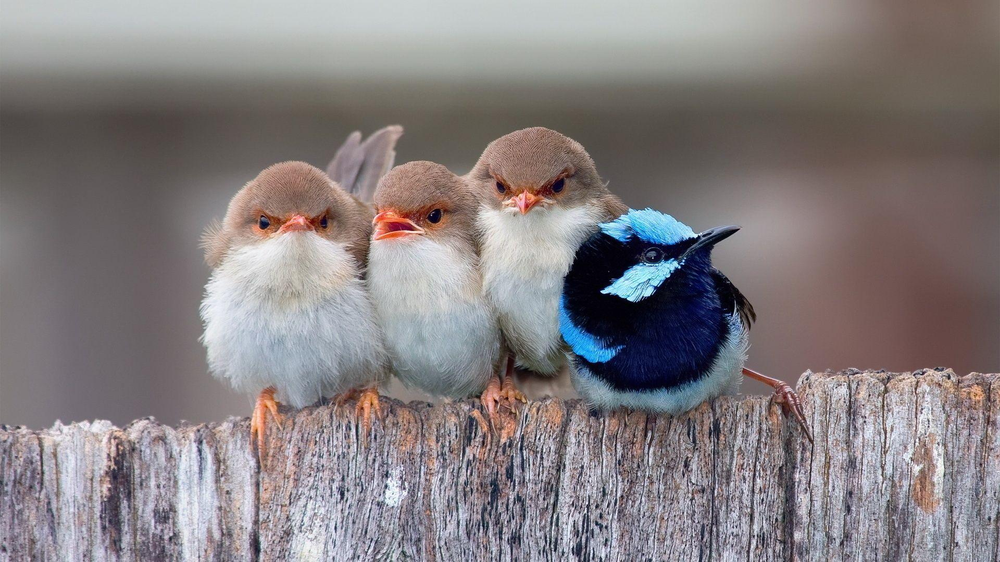
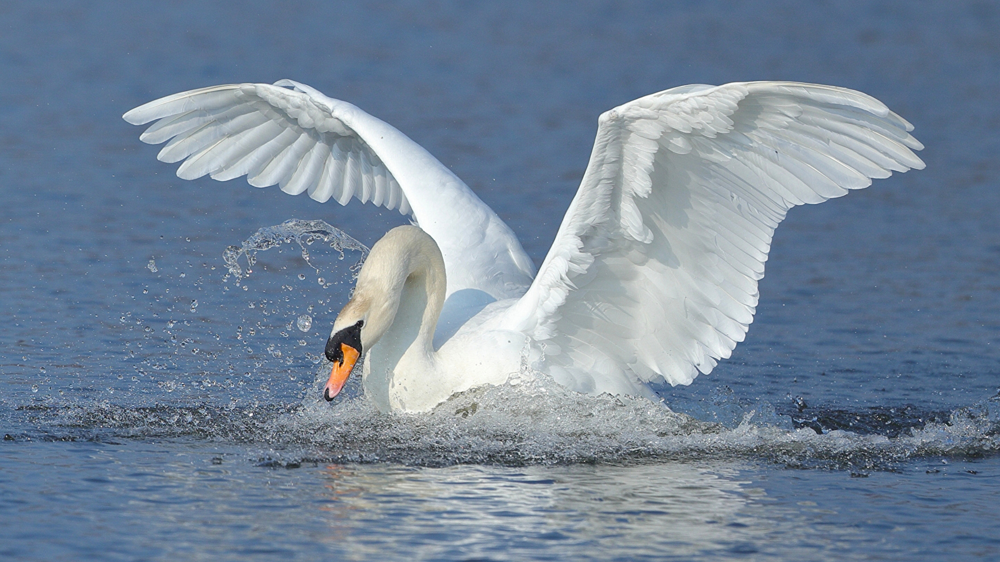
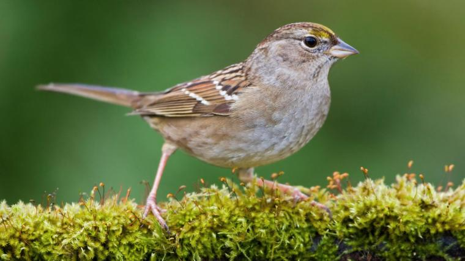
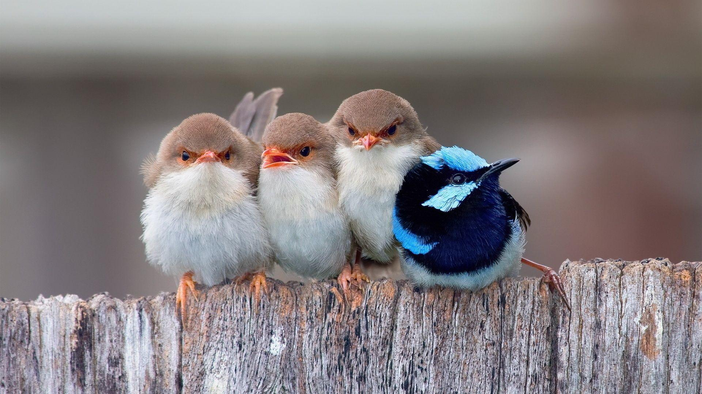
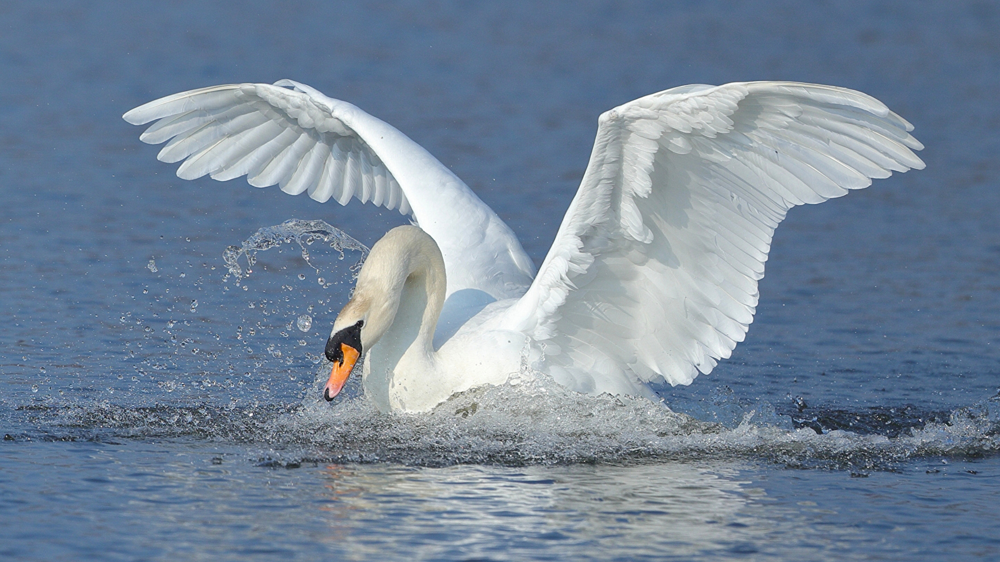
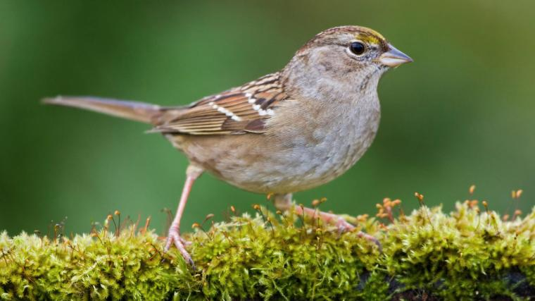
"A heart without dreams is like a bird without feathers." -Suzy Kassem
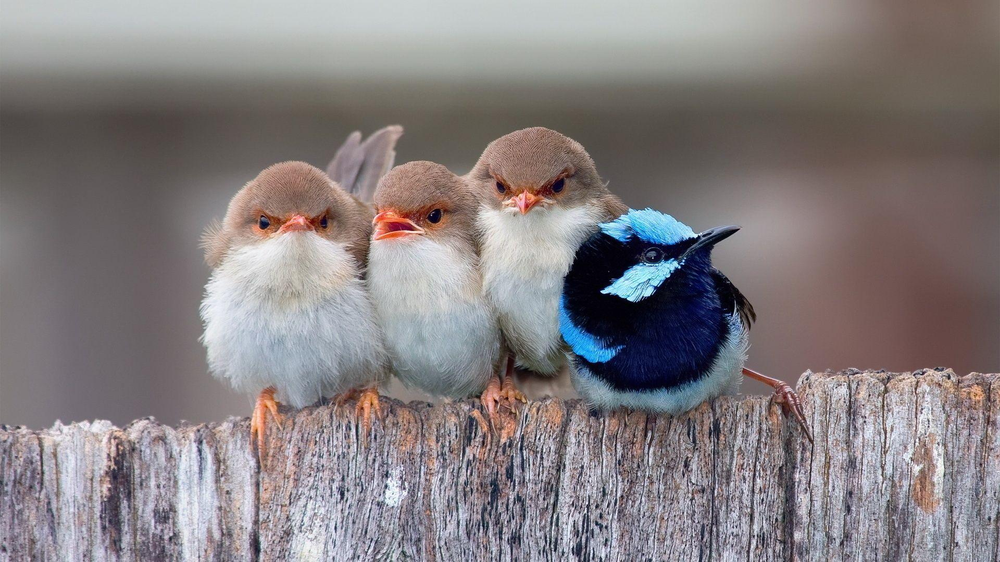
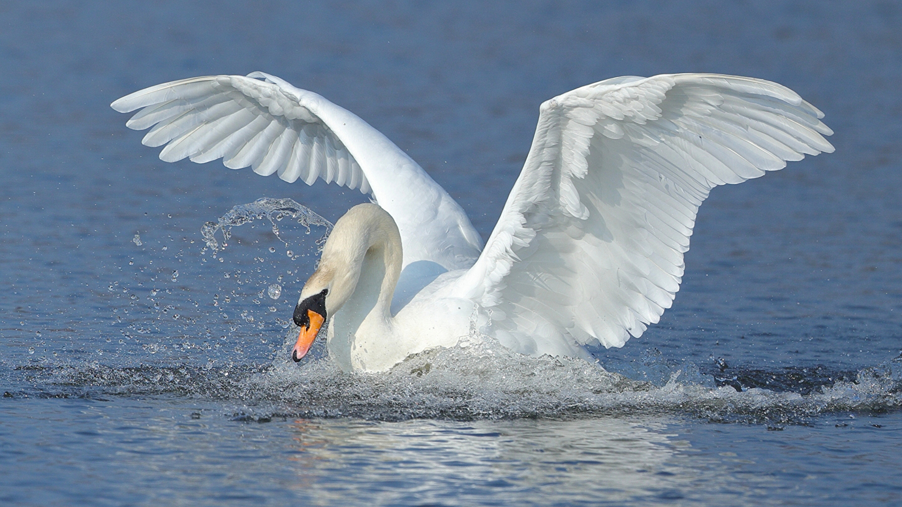
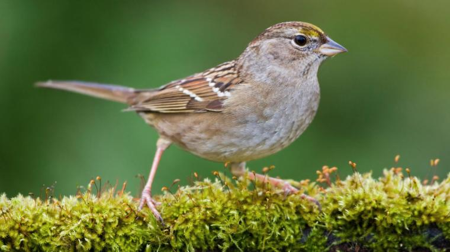
Birds are a group of warm-blooded vertebrates constituting the class Aves, characterised by feathers, toothless beaked jaws, the laying of hard-shelled eggs, a high metabolic rate, a four-chambered heart, and a strong yet lightweight skeleton. Birds live worldwide and range in size from the 5.5 cm (2.2 in) bee hummingbird to the 2.8 m (9 ft 2 in) common ostrich.
Interact with the image below to find out more!
Each feather on a bird's body is a finely tuned structure that serves an important role in the bird's activities. Feathers allow birds to fly, but they also help them show off, blend in, stay warm, and keep dry.
A bird beak is the most important resource it has, and every species has one solely designed for survival. Birds use beaks for just about everything: building nests, feeding their young, cleaning their feathers, defending themselves and eating.
The skeletons of birds (and other flying vertebrates) need to be lightweight to minimize the metabolic cost of flight, and at the same time strong enough to withstand the forces encountered during flight. The same trade-off applies to manmade airframes.
Birds have 4-chambered hearts made of the right atrium, right ventricle, left atrium and left ventricle. The division helps for efficient flow of oxygenated and deoxygenated blood. Birds also have specific adaptations for flight, including a larger heart relative to body weight and a faster heart rate.
The most common interaction with human is that birds were use as food to sustain humans, like your favourite fried chicken from KFC. Birds were also used in entertainment and their feathers were collected for clothing and fashion. From the Middle Ages to the 1800s, carrier pidgeons were use for commerce, navigation and especially in the armed forces where they send messages to and fro and even to the enemies.
Birds are feathered theropod dinosaurs and constitute the only known living dinosaurs. Likewise, birds are considered reptiles in the modern cladistic sense of the term, and their closest living relatives are the crocodilians. Birds are descendants of the primitive avialans (whose members include Archaeopteryx) which first appeared during the Late Jurassic. According to DNA evidence, modern birds (Neornithes) evolved in the Early to Late Cretaceous, and diversified dramatically around the time of the Cretaceous–Paleogene extinction event 66 mya, which killed off the pterosaurs and all non-avian dinosaurs. Below shows the time period of their evolution.
The birds in the Paleozoic Era weren't very "bird-like," they looked more like dinosaurs, which were called Archosaurs. Although eventually they evolved into crocodiles and birds that we have today! They did this to help themselves have easier lives as time went on.
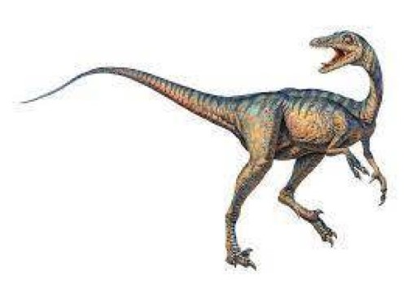The birds had changed in many ways to help themselves do things like hunt, survive, and etc. Their bodies became slimmer, they developed more feathers and longer wings. Possibly to help provide a method to protect themselves.
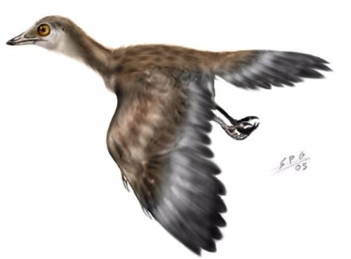We now have many different breeds of birds because of how the birds evolved to their surroundings. For example: A bird who lived in a colder climate would develop feather to help protect themselves from the cold while a bird that lived in a warmer climate might have less feathers.
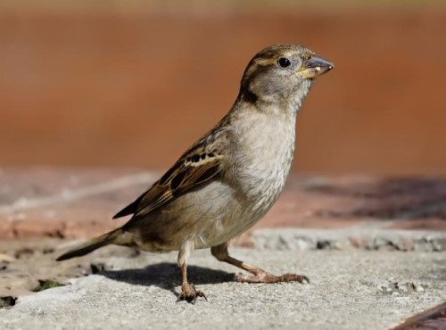Mynas are medium-sized passerines with strong feet. Their flight is strong and direct, and they are gregarious. Their preferred habitat is fairly open country, and they eat insects and fruit. Plumage is typically dark, often brown, although some species have yellow head ornaments. (very common in Singapore)
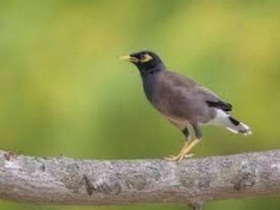Crows completely black birds weighing on average 450 g. The feathers have a glossy and slightly iridescent look. Crows have strong legs and toes. The bill is also black with a slight hook on the end. Crows are omnivorous and eat whatever is available—insects, spiders, snails, fish, snakes, eggs, nestling birds, cultivated fruits, nuts, and vegetables. They also scavenge dead animals and garbage. Crows are known to drop hardshelled nuts onto a street, and then wait for passing automobiles to crack them.(Scavengers/ Predator)
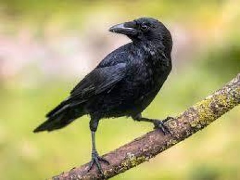Penguins curious creatures that are always exploring their surroundings. In addition, penguins are friendly animals that enjoy social interaction. Penguins are determined and fearless, willing to face any challenge, despite their inability to fly. Their adaptability is evident in their ability to thrive in different climates. eat krill, squids, and fishes. Their diet varies slightly on the species of penguins, which have slightly different food preferences. This reduces competition among species. The smaller penguin species of the Antarctic and the subantarctic primarily feed on krill and squids.(cannot fly, live in cold weathers)
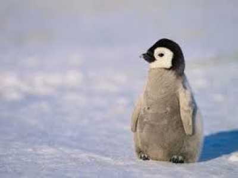Ostritch are large flightless birds. They are the heaviest living birds, and lay the largest eggs of any living land animal. With the ability to run at 70 km/h (43.5 mph), they are the fastest birds on land. They are farmed worldwide, with significant industries in the Philippines and in Namibia.re omnivores. Their diet varies depending on the food available in their habitat. They primarily eat plants, but also eat insects, snakes, lizards and rodents. They are able to consume things that other animals can't digest because they have tough intestines to absorb as many nutrients as possible.(biggest bird, cannot fly)
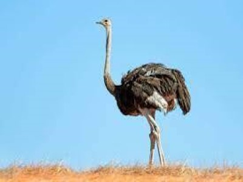